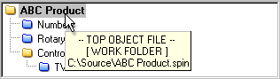

Example Object View display showing the structure of the ABC Product compilation
The Object View displays a hierarchical view of the project you most recently compiled successfully. There are two Object Views in the Propeller Tool: 1) The Object View at the top of the Integrated Explorer in the main application’s window (see Screen Organization), and 2) The Object Info View in the upper left of the Object Info form (see Object Info). Both of these Object Views function in a similar fashion.
The Object View provides visual feedback on the structure of the most recent successful compilation as well as information for each object within the compiled project.
Example Object View display showing the structure of the ABC Product compilation
In the figure above, the Object View indicates the structure of the ABC Product application. In this example, the ABC Product object is the “top object file” (see Tutorial XX) and it uses the Numbers, Rotary Encoder and Controller objects. Additionally, the Controller object uses the TV object.
The object names shown are their actual file names without the extension. The name includes their file extension only if they are data files, and it is shown in italics as well. The icons to the left of each object name indicate the folder that the object exists in. This list shows the four possibilities:

Using the mouse to point at and select objects can provide additional information as well. Clicking on an object within the Object View opens that object into the Editor pane. Left-clicking opens that object in Full Source view, right-clicking opens it in Documentation view and double-clicking opens it, and all its sub-objects, in Full Source view. If the object was already open, the Editor pane simply makes the related edit tab active and switches to the appropriate view; Full Source for a left-click or double-click, or Documentation for a right-click.
Hovering the mouse over an object in the Object View displays a hint with additional information for that object.

Hints for the ABC Product file
The hint for the ABC Product file indicates:

Hints for the Numbers file
The hint for the Numbers file indicates:
It’s a good idea to review the hints in the Object View occasionally since they may also contain additional helpful information, such as warnings about conflicts and optimization results.
Propeller Help Version 1.2
Copyright © Parallax Inc., dba Parallax Semiconductor
6/17/2011